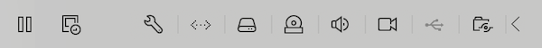
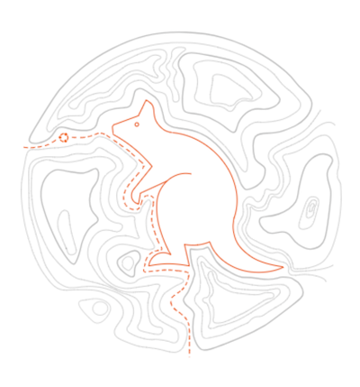
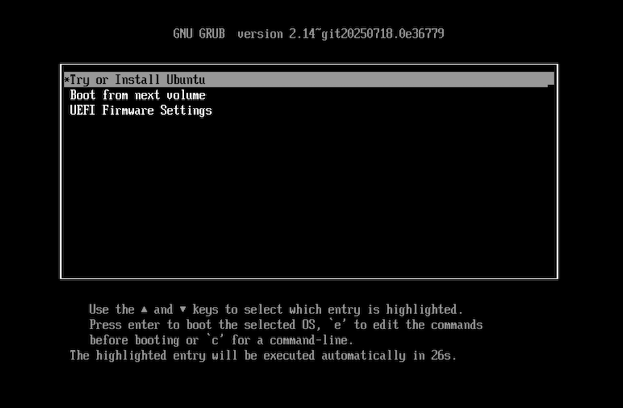
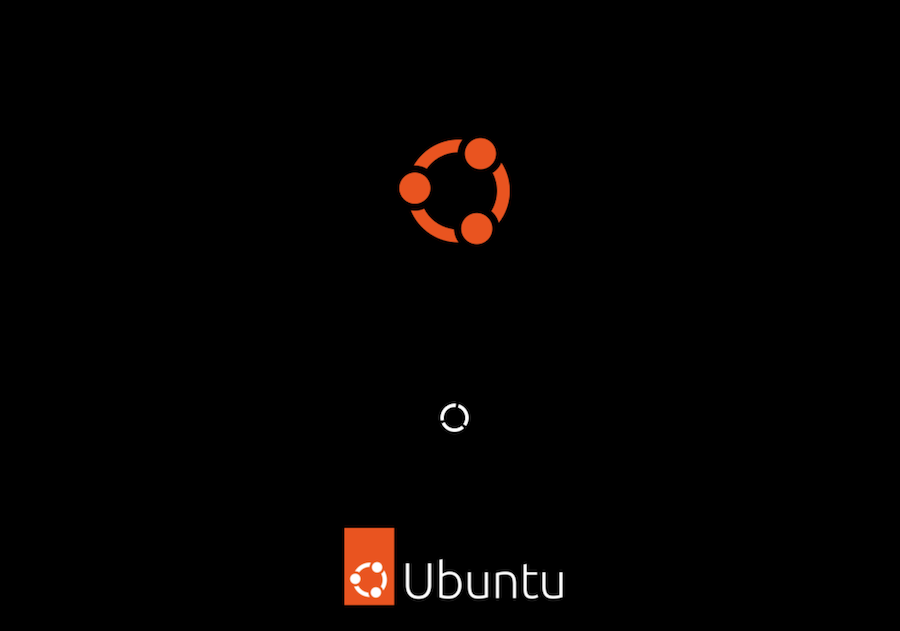
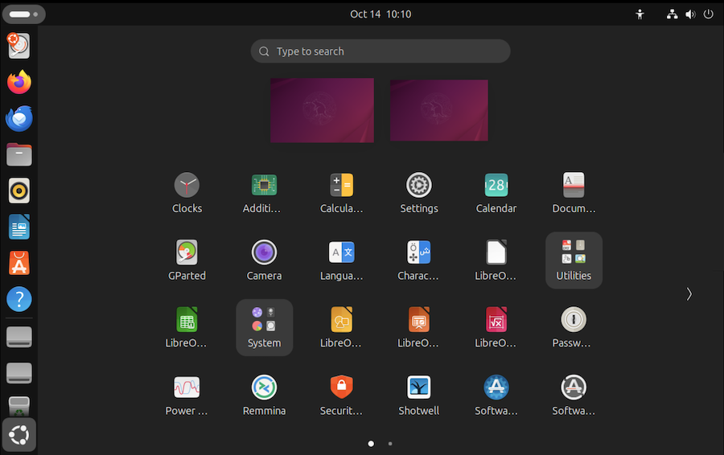
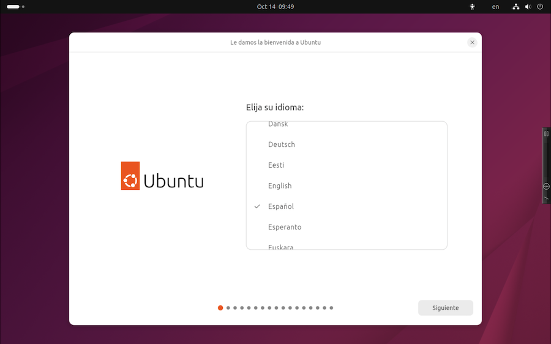
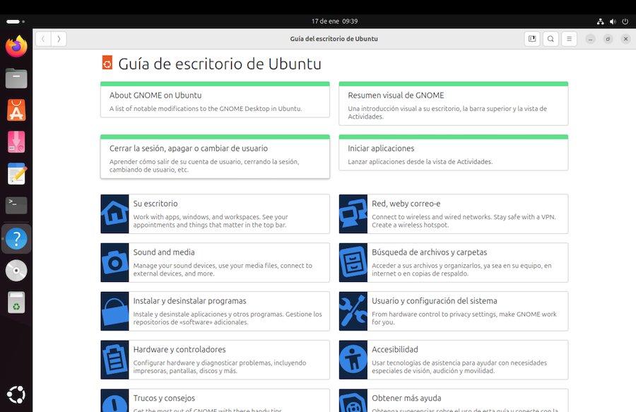
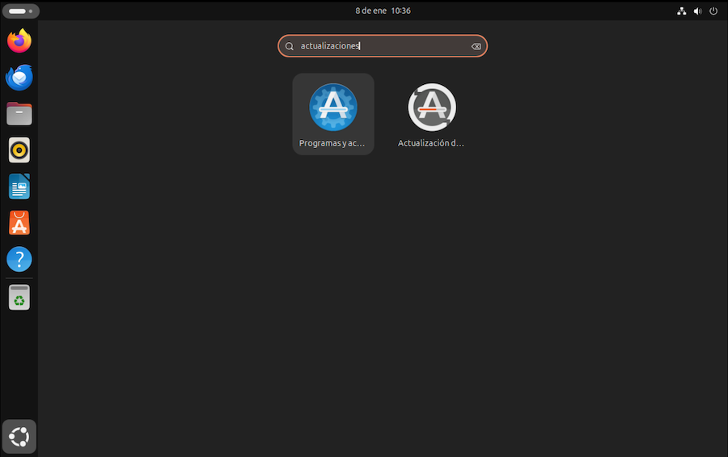
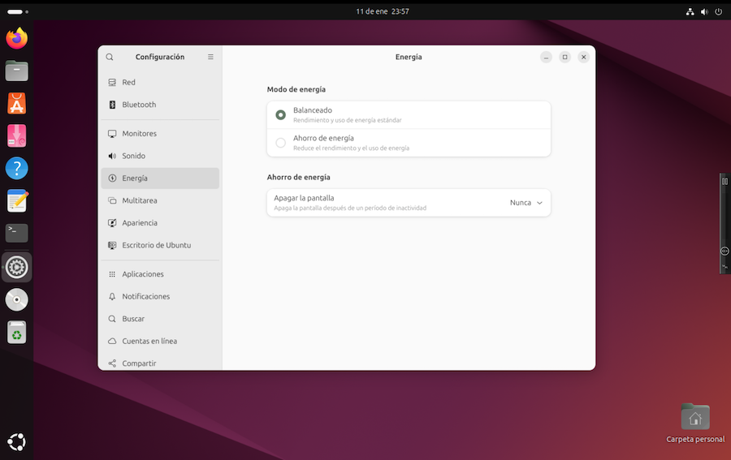

Probar e instalar Ubuntu¶
Según lo visto, al instalar Linux en nuestra computadora tenemos dos posibles alternativas, hacerlo en la máquina física, borrando el disco duro físico y sustituyendo el viejo sistema operativo, o instalarlo en la máquina virtual que hemos creado en el capítulo anterior.
- en el primer caso, arrancaremos el ordenador con el pendrive conectado
- en el segundo, iniciaremos la máquina virtual, estableciendo el archivo ISO descargado como DVD virtual, sin necesidad de preparar un pendrive físico. Comprobar previamente que está configurado como disco de arranque.
Pantalla inicial¶
Cuando ponemos en marcha un ordenador, ya sea físico o virtual, se busca automáticamente en el disco duro (o prioritariamente en el pendrive, si tenemos uno conectado) un programa que se conoce como "gestor de arranque". En muchos sistemas operativos es un software que no muestra nada en pantalla y se ejecuta silenciosamente. Carga en la memoria RAM el sistema operativo, un proceso que dura unos segundos, y lo pone en marcha. Durante este procedo, veremos la pantalla en negro.
En el caso de Ubuntu, el programa cargador es uno llamado GRUB. Tratándose del DVD de instalación, GRUB viene configurado para mostrar un menú de arranque:

Cuando hayamos instalado el sistema operativo, el arranque se hará desde el disco duro virtual, y este menú dejará de visualizarse. Esto es importante, ya que, si vemos el menú de GRUB en pantalla, significa que estamos arrancando la máquina desde el pendrive (físico o virtual) y no desde el disco duro. Si no es lo que pretendemos, habrá que apagar la máquina virtual, reconfigurarla (apartado disco de arranque, seleccionar disco duro) y volver a iniciarla.
Como todavía no hemos iniciado Linux ni su escritorio, el menú de GRUB resulta bastante primitivo. Se ejecuta en forma de consola de texto, sin elementos gráficos, y aquí no funciona el ratón. Hay que usar las teclas de flechas Up Down para seleccionar una opción y, a continuación, pulsar Enter para ejecutarla.
Ratón bloqueado
En el caso de las máquinas virtuales, cuando la ventana de VMWare es la que tiene el foco, se apropia del teclado y ratón, como sucede con todas las ventanas. Pero como en este menú de inicio no funciona el ratón, no podemos arrastrarlo fuera de la ventana, quedando el puntero atrapado y oculto.
Para liberarlo, VMWare tiene una combinación de teclas especial. En mi caso, siendo la máquina física un Mac, se trata de las teclas Ctrl+Cmd. Podemos consultarlo en la configuración general de VMWare, apartado "teclado y ratón".
En este menú de arranque, seleccionamos la primera opción, "Try or Install Ubuntu" y pulsamos Enter. Se carga el sistema operativo desde el pendrive virtual. Tras un cierto período de tiempo, se completa la carga y se muestra el escritorio de Gnome. Se ejecuta automáticamente el programa para instalar Ubuntu en el disco duro. Lo primero que vemos es una ventana para seleccionar el idioma:

Vamos pulsando en el botón [Siguiente], paso a paso, y aceptamos las configuraciones por defecto. En lo referido a Internet, se nos sugiere como "conexión por cable". En realidad se trata de la conexión simulada por la máquina virtual, que se beneficia de lo que tengamos en la máquina física, wifi, cable, o lo que sea.
En uno de los pasos se nos da la opción de seguir con la instalación de Ubuntu en el disco duro virtual o explorar el sistema un poco antes de instalar nada. Vamos a optar por esta segunda opción, "probar Ubuntu":
Por ahora tenemos un disco virtual vacío, y un sistema operativo cargado desde el pendrive virtual. A esto se le llama una sesión "Live".
El aspecto de Ubuntu
Curiosamente, hay algo que siempre ha provocado cierta controversia; el esquema de colores tan chillón que tiene Ubuntu. Esos temas rojizos provocan una mezcla de amor y odio...
Pero como veremos más adelante, si no nos gusta, podemos configurarlo. Paciencia.
Los logotipos de Ubuntu
 El logotipo principal de Ubuntu es conocido Circle of Friends (círculo de amigos). Los puntos son cabezas y las líneas curvas son los brazos y manos. El logotipo principal de Ubuntu es conocido Circle of Friends (círculo de amigos). Los puntos son cabezas y las líneas curvas son los brazos y manos.
|

Cada nueva versión de Ubuntu lleva el nombre de un animal, cuyo diseño aparece en la documentación, fondo de escritorio y otros elementos gráficos. |
Visualizaci√≥n en máquinas virtuales¶
VMware permite mostrar el escritorio virtual en una ventana, u ocupando la pantalla completa. Para cambiar de formato, pulsar sobre el menú "Vista" de VMware y seleccionar "single window" o "full screen".
Cuando la máquina virtual ocupa toda la pantalla, dejaremos de ver el menú de VMWare. No hay problema. Basta con acercar el ratón al borde superior de la pantalla, y aparecerá el menú y la barra de título de la ventana:

La barra de título de la ventana VMware muestra el nombre de la máquina virtual y unos prácticos botones de control para gobernarla:

Al cambiar de "single window" a "full screen", es posible que la resolución de la máquina virtual se reconfigure automáticamente. Si tenemos problemas con esto, tenemos dos opciones:
-
Acudir a la configuración de VMware, según vimos en el capítulo dedicado a la creación de máquinas virtuales, y hacer ajustes en el apartado Pantalla. La opción "ajustar máquina virtual a la pantalla" significa que los contenidos se verán más grandes o más pequeños, pero sin modificar la resolución de la máquina virtual. La opción "cambiar tamaño", por el contrario, modifica la resolución en la máquina virtual cada vez que se modifica el tamaño de la ventana o pasamos a pantalla completa.
-
Alternativamente, en lugar de reconfigurar VMware podemos ajustar las preferencias de Ubuntu, cambiando a mano la resolución del escritorio. Acudir a la configuración de Gnome siguiendo el procedimiento que se describe al final de este capítulo, y en el apartado "Displays", seleccionar otra resolución y activarla pulsando en el botón
[Apply]
Explorando Gnome¶
El escritorio de Ubuntu es una versión "tuneada" de Gnome. Incorpora una barra lateral (el Dock) con iconos de las aplicaciones favoritas. En la esquina inferior izquierda tenemos un icono con el logo de Ubuntu o con la imagen de una rejilla, dependiendo del juego de iconos que tengamos seleccionado (una vez instalado el sistema operativo, podemos cambiarlo):
 
Pulsando ahí, se despliega una lista de aplicaciones (la "parrilla", o grid), con una caja de búsqueda por texto:

Si hay más iconos que espacio disponible, se agrupan en páginas. En la parte inferior de la parrilla tenemos unos puntos que se pueden pulsar para seleccionar la página siguiente o la anterior. También podemos pasar de página pulsando en los iconos < > en los márgenes izquierdo o derecho.
La parrilla de aplicaciones
¡Cuidado! No todos los programas instalados aparecen en la parrilla. Por ejemplo, si marcamos uno como favorito, se mostrará en el Dock y se retirará de la parrilla. De todas formas, la caja de búsquedas por texto muestra en sus resultados todas las aplicaciones encontradas.
En la barra superior del escritorio tenemos unos iconos de estado en la esquina de la derecha. Pulsando ahí, se despliega un menú de sistema que nos da acceso a dos iconos interesantes:
- El de la rueda dentada nos da acceso a la configuración de Ubuntu
- El icono de apagar nos permite finalizar la sesión

Dependiendo de la configuración de la máquina (en mi caso, una virtual), podemos ver más iconos en este menú:
- bloquear pantalla
- capturar imagen de la pantalla
- control de sonido
- estado de red
- control de energía / estado de batería
- seleccionar modo claro/oscuro
- bluetooth, wifi
- etc.
También podemos desplegar opciones de accesibilidad:

La ejecución de programas se puede hacer pulsando en la barra lateral del Dock, o desplegando la parrilla de aplicaciones. Vamos a probar a pulsar en el icono de Firefox, el navegador web:
Esto nos permitirá comprobar nuestra conexión a internet:

Iconos de control de ventanas¶
En el momento de escribir estas notas, las ventanas del escritorio Gnome no cuentan con los tradicionales iconos de minimizar, maximizar y restaurar ventana. El escritorio adaptado de Ubuntu los incluye en la esquina superior derecha;
_ □ ✕
Menús en las aplicaciones¶
Muchas aplicaciones suelen mostrar la típica barra de menú en la parte superior de la ventana. Las utilidades Gnome son algo atípico. Se suele sustituir la barra de menú por un icono que es habitual en las tablets o teléfonos móviles:
☰
Pulsando en ese icono, veremos las opciones de menú.
El manual de Ubuntu¶
Ubuntu proporciona un manual de uso al que podemos acceder iniciando la aplicación de Ayuda:

Se trata de un texto con una traducción al español que a veces es incompleta. Pero nos puede servir como guía inicial.
Teclado¶
Antes de instalar nada, conviene dejar resueltos los posibles conflictos entre "atajos de teclado" de ambas máquinas, la física y la virtual, aunque esto se puede dejar para más adelante.
En el menú de VMware, seleccionamos Ajustes > Keyboard:
Apagar la máquina¶
Tras explorar un poco el funcionamiento del escritorio de Ubuntu, vamos a instalar el sistema operativo en el disco duro, en nuestro caso, el virtual.
Lo primero es reiniciar la máquina. En la barra superior del escritorio tenemos los iconos de estado en la esquina de la derecha, como ya hemos visto. Pulsamos ahí, y seguidamente en el icono de apagar.
Instalaci√≥n en el disco duro¶
Antes de empezar el proceso, debemos asegurarnos de que tenemos el ordenador conectado a la red eléctrica y a Internet. Esto último es especialmente importante, porque permitirá detectar la conexión de red, configurarla automáticamente, y descargar contenidos no incluidos en el pendrive de instalación.
Reiniciamos la sesión Live, comprobando que tenemos el pendrive virtual conectado, como vimos anteriormente, y asegurándonos de que el disco de arranque siga siendo el DVD virtual.
Llegado el momento, optamos por completar la instalación:
Se nos irá guiando paso a paso. A las sucesivas preguntas optamos por:
- Hacer una instalación interactiva guiada
- Selección ampliada de software, más allá de optar por instalar solo lo esencial
- Incluir la instalación de programas privativos de terceros y compatibilidad con formatos multimedia
- Usar todo el disco duro (en nuestro caso, el virtual), borrando su contenido si lo hubiera
- ¿Cifrar el disco duro virtual? Tiene sus ventajas e inconvenientes. Yo no suelo hacerlo.
- Al cumplimentar los datos de usuario, optamos por acceder sin contraseña, dado que se trata de una máquina virtual, y ya tenemos contraseña para la física (a menos que usemos la virtualización para esconder nuestros documentos secretos)
- Seleccionar el uso horario
¿Cifrar el disco duro?
Si queremos una máquina virtual solo para experimentar, no lo veo necesario. Y si la queremos para esconder documentos confidenciales, habrá que tener un buen sistema de copias de seguridad. En cierta ocasión, examinando otra distribución (distinta de Ubuntu) me encontré con que la reinstalación del sistema operativo generaba nuevas claves de cifrado, y dejaba los documentos irrecuperables, por estar cifrados con la clave de la instalación anterior. Desconozco como gestionará Ubuntu este apartado en la actualidad.
Tras cumplimentar todo esto, pulsamos en el botón Instalar. Durante el proceso, se copian los contenidos del pendrive al disco duro, se bajan otros de Internet y se configura el software. Mientras tanto, se nos irá mostrando información sobre Ubuntu. Paciencia; el proceso dura unos minutos.
Finalmente, se muestra un mensaje "Ubuntu está instalado". Pulsamos en el botón "Reiniciar`:

Antes de reiniciarla, acudimos a la configuración de la máquina virtual, cambiamos la unidad de arranque y establecemos que sea el disco duro.
Unidad de arranque
Si al reiniciar la máquina visualizamos el menú de GRUB, significa que estamos arrancando desde el pendrive virtual. Como ya hemos instalado Ubuntu, lo que queremos es arrancar desde el disco duro. Apagar la máquina virtual, entrar en la configuración de VMware, y establecer el disco duro virtual como disco de arranque. Volver a reiniciar.
Tras cargar el sistema instalado en el disco duro virtual, aparece la ventana de bienvenida:

Se establece un diálogo de configuración inicial. Vamos pulsando en el botón [siguiente] hasta completar todos los pasos.
Actualizar software¶
Ubuntu publica actualizaciones de software diariamente, y el DVD de instalación viene con los programas vigentes en el momento del lanzamiento de la versión que hemos instalado. El primer paso ha de ser actualizar ese software.
Desplegamos la parrilla de aplicaciones y, en la caja de búsqueda, introducimos el texto:
actualizaciones
con lo que veremos dos programas:

Seleccionaremos el icono azul, Programas y Actualizaciones, para configurar la frecuencia de refresco y forma en que se instalan las actualizaciones. Para llevar a cabo la primera actualización, seleccionamos el icono gris, Actualización de software.
Una vez completado el proceso, seguramente se nos pedirá que reiniciemos el sistema. Con esto, damos por terminada la instalación.
Añadamos un par de detalles.
La minibarra¶
Cuando la máquina virtual ocupa toda la pantalla, dejaremos de ver el menú de VMWare. Ya hemos visto como solucionarlo, pero contamos con una alternativa muy interesante, la minibarra.
Consiste en un pequeño gadget, que se muestra en uno de los bordes de la pantalla, y al pulsar sobre el mismo muestra un menú con opciones que habitualmente encontraremos en el menú de VMWare o en su barra de herramientas.
Si la activamos (menú Vista > Minibarra) podemos hacer cosas tales como suspender/apagar la máquina virtual, entrar en la configuración, conectar o expulsar CDs, o simular combinaciones de teclas que son capturadas por el Host y necesitamos pulsar en la máquina Guest.
En la siguiente imagen vemos la minibarra en el borde superior del escritorio. Una de las opciones del menú desplegado es cambiar de sitio la minibarra y llevarla a otro lado de la pantalla:

Podemos configurar la minibarra para que se muestre solo cuando acercamos el ratón.
Máquina virtual por defecto¶
Podemos establecer que cuando iniciemos VMWare, arranque determinada máquina virtual sin que tengamos que hacerlo a mano. La seleccionamos, entramos en la configuración de la máquina, y en el apartado General, marcamos la opción Iniciar automáticamente.
La configuraci√≥n de Gnome¶
En los próximos capítulos veremos como configurar el sistema Ubuntu para adaptarlo a nuestras necesidades y preferencias. Como paso final del proceso de instalación, echemos un vistazo al programa de configuración de Gnome:

Para saber más sobre este programa de utilidad, véase página web del proyecto.
Podemos acceder de varias formas:
-
pulsando en el icono de Ubuntu, en el extremo inferior del Dock:
En la lista de aplicaciones, seleccionamos Configuración
-
pulsando en los iconos de estado, en la esquina superior derecha del escritorio. En el menú desplegable, pulsar en el icono de la rueda:
Con esto damos por finalizado el proceso de instalación. En los próximos capítulos veremos como utilizar Linux Ubuntu.
Instalar Ubuntu Server¶
Nota
Todo lo descrito hasta ahora es válido para la versión Desktop de Ubuntu, concebida para uso doméstico. A veces he intentado instalar Ubuntu Server, para ver que aspecto tiene. A continuación hago un breve repaso del proceso.
Podemos saltarnos este apartado.
Ubuntu Server es la versión concebida para instalar y configurar un servidor de red. Vamos a probar a instalarlo. Comparado con la versión Desktop, encontraremos algunas diferencias notables en el proceso:
-
el archivo ISO a descargar es el específico para Ubuntu Server.
-
Ubuntu Server se distribuye sin escritorio. El proceso de instalación y la sesión de usuario es en modo de consola de texto, donde solo funcionan las teclas de flechas Up Down, Tab y Enter, además de la opción de introducir texto en algunas casillas. No hay ratón ni elementos gráficos.
-
el software instalado de serie es el necesario para montar un servidor. Para un uso doméstico, tendremos que instalar otros programas a mano, y algunos de los que vienen por defecto, no los utilizaremos en nuestro día a día.
-
una vez hecha la instalación, dado que el modo de trabajo sigue siendo en forma de consola de texto, instalaremos a mano el programa de escritorio Gnome (o cualquier otro que sea de nuestro gusto).
Durante el proceso de instalación, usar la tecla Tab para ir de una casilla a otra, Space para marcar casillas, y Enter para aceptar.
Paso 1: selección de Idioma:

Selección de teclado. Una vez hecho, ir a [Hecho] con Tab (en la parte inferior de la pantalla) y pulsar Enter

Paquetes a instalar. Ir con Tab a la casilla buscar drivers de terceros y pulsar Space para marcarla. Ir a [Hecho] y pulsar Enter.

Selección de interfaz de comunicaciones y proxy. Lo damos por bueno o dejamos en blanco lo que se nos pida, salvo que queramos configurar la máquina como servidor de red.

Selección de fuente de descargas para la instalación. Se resuelve automáticamente:

Configuración del disco duro virtual. Lo damos por bueno:

Tras completar todas las selecciones, se nos pide crear un nombre de usuario y contraseña. También se pregunta si queremos instalar un paquete de seguridad SSH para acceso a nuestro servidor. Como no es el caso, lo dejamos en blanco.
Selección de paquetes populares en servidores. Lo dejamos en blanco (salvo que nos interese alguno de ellos):

Proceso de instalación en marcha. Al finalizar, seleccionar [Reiniciar ahora] y pulsar Enter.

Una vez reiniciada la máquina, veremos que no hay elementos gráficos. En modo consola de texto aparece lo siguiente:
login:
Introducimos nuestra nombre de usuario y seguidamente se nos pedirá la contraseña. Entramos a una sesión de comandos.
Más adelante veremos con más detalle como funcionan los comandos de Linux. En resumen, se muestra un prompt $ , precedido por información de la sesión. Ese prompt nos invita a introducir el texto de un comando, que se ejecutará al pulsar Enter.
Cada comando ejecuta una tarea, que una vez completada, hace que se recupere el prompt $ para introducir el siguiente comando.
Algunos comandos van mostrando información en la pantalla, a medida que avanzan en su trabajo, y ocasionalmente nos hacen alguna pregunta:
Ok to install software? [Y/n]
En ese caso, tecleamos Y o N. A veces, también hay que pulsar Enter.
El comando para apagar la máquina virtual es:
$ sudo shutdown now
El carácter $ que se muestra en estos comandos no es algo que tenemos que teclear.
La palabra sudo es la abreviatura de super user do, y significa que se trata de un comando que nos va a exigir permisos de administrador. Al ejecutarlo, se nos pedirá contraseña.
Para instalar el escritorio gráfico vamos a utilizar los siguientes comandos:
-
Comenzamos por actualizar la lista del software disponible, sincronizando con los repositorios de Ubuntu:
$ sudo apt updateaptes el programa de instalación de software nuevo. -
No recuerdo muy bien para que hacía falta el siguiente comando. Lo descubrí navegando por Internet e instala un programa llamado tasksel. Al parecer, permite la instalación de grupos de paquetes de software en un solo paso.
$ sudo apt install taskselEl comando
apt installes el que se usa para descargar e instalar paquetes, en el caso de repositorios tipo Debian, como es el caso de Ubuntu. -
El tercer paso es instalar el escritorio gráfico. Es un proceso largo que tarda un buen rato en ejecutarse, y llena la pantalla de mensajes:
$ sudo apt install ubuntu-desktop -
Finalizamos reiniciando la máquina:
$ sudo reboot now
Una vez reiniciada, veremos que el proceso de arranque es un poco lento, porque se comprueban muchos servicios de comunicaciones propios de un servidor. Paciencia. Estamos haciendo un apaño al utilizar Ubuntu Server en lugar de la versión Desktop.
Tras completar el arranque, vemos que ya tenemos el escritorio gráfico. Abrimos el terminal de comandos y completamos algunos pasos adicionales:
-
Synaptic es el gestor gráfico para instalar software. Nos ahorra el uso de comandos. Abrir la ventana de Terminal, e instalarlo con el comando:
$ sudo apt install synaptic -
Los dos siguientes paquetes de software sirven para que Ubuntu se entienda con VMware en cosas tales como copiar y pegar de un sistema a otro, o compartir carpetas. Una vez ejecutados, para que tengan efecto habrá que reiniciar la máquina:
$ sudo apt install open-vm-tools $ sudo apt install open-vm-tools-desktop
Finalmente, entramos en la configuración del sistema, y establecemos el idioma y huso horario. Con esto ya tenemos "casi" lo mismo que si hubiéramos instalado la versión Desktop de Ubuntu. Falta instalar nuestros paquetes favoritos, considerando que la selección de software no es la misma si comparamos las versiones Desktop y Server